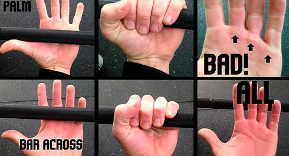
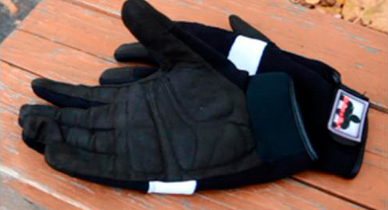

When you regularly train on pull-up bars you will eventually get calluses on your hands. Sooner or later, but this just can’t be avoided. Unfortunately, not everybody knows that calluses should be treated carefully. That’s why they can bring some real troubles. Our goal is to give you the maximum of useful information, therefore today I’m going to speak how to get away from problems calluses or even how to get rid of them at all.
4 ways to fight calluses
1. Grip. Calluses usually appear because of over tension between your skin and bars: when grip is not firm your palm is slightly rotating one way or another. So you have to grip the bar with your thumbs and not palms. Here is a good example of the difference between two grips. This way it takes you more strength from your forearms and palms, but in the end of the day you will thank us.

2. Bar thickness. From school course of physics (yes, yes, this was a cool subject, wasn't it?) you might remember that pressure force is inversely proportional to the size of an area under the pressure. Thus, by increasing the area of contact of your hand and a bar, you will decrease the weight of the load on skin and reduce possibility of getting calluses.
This can be achieved by two ways:
1. Find a thick bar and do pull-ups on it;
2. Increase the thickness of a regular bar via fat grips or your favourite towel with a pink pony.
Choose either way and go!
3. Special WORKOUT gloves. Use the gloves that suit your training. In this aspect two variants may be highlighted:
1. When hand rotates around the bar (e.g. during muscle ups)
2. When bar is in a fixed position in your hand (e.g. during pull-ups or static exercises)

In first case you need gloves with a soft protection pad near the fingers and on the palm, because this pads protect your hands from getting the calluses. Also, your gloves shouldn’t have a high friction coefficient as we had already written about the consequences of friction force!
In second case you just need gloves that provide a good cohesion with bar, because this way you will reduce the load on your skin. As a radical alternative variant you can use special GRIPAD grips, which tightly fix your hand on a bar and have a few centimeters of protection surface that doesn’t allow calluses to appear.
4. Hand cream. Use lotion or cream (anyone is fine) to make your palms soft, as the dry skin more often chaps, cracks, tears and distracts you from training.
Well, that’s it. The main thought that I want you to understand is that although you can’t avoid getting the calluses, it doesn’t mean that you should suffer from them.